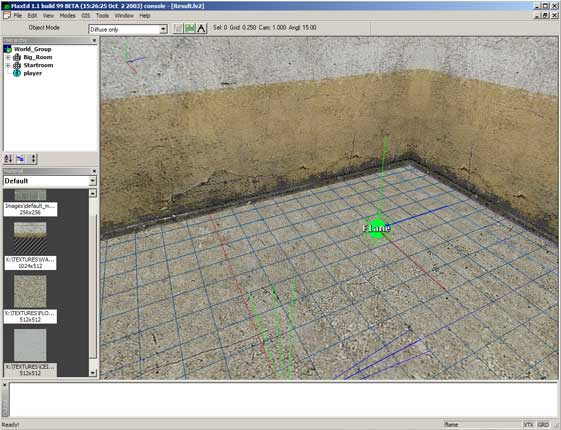
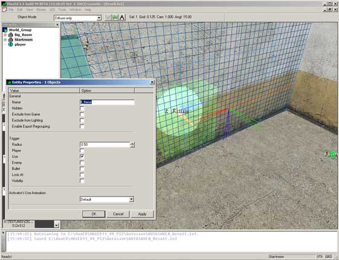
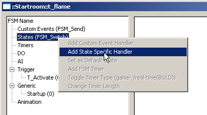
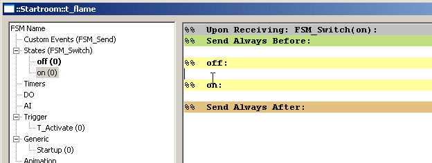
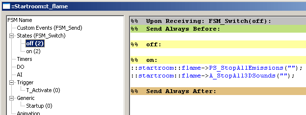
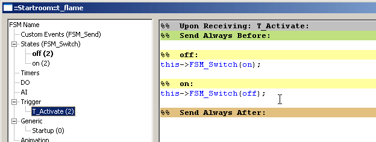
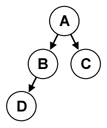
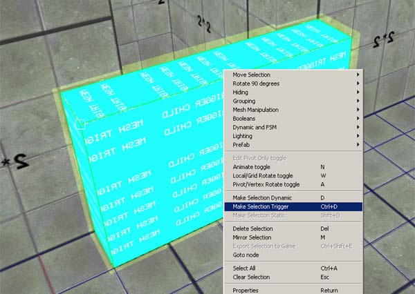
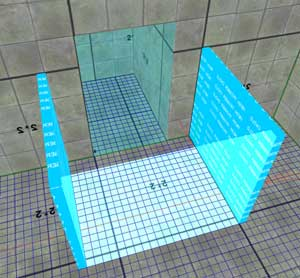

|
Dynamic Content (FSMs)
In this tutorial we will build a simple FSM-script and learn the theory of more complex machines. If you
are not familiar with the FSM-scripting of the original Max Payne, there is some reminding material
towards the end of this tutorial about FSM messages in general.
Download the level files for this tutorial FSMs_examples.zip
Introduction
Just like in original Max Payne, in Max Payne 2 the gameplay scripting is implemented with
Finite State Machines (FSM). There are no hard-coded dynamic entities
such as doors and lifts, but rather all these are built out of various simple
entities like dynamic objects (DO), triggers and floating FSMs, that you script to behave as you desire.
These entities can detect various events and send messages to each others to control the gameplay. For example when the player opens a door, it can send a message to the nearby enemies to make them come and investigate the noise.
Scripting FSM
We'll do a small example involving FSM scripting. We'll do a trigger which toggles a flame on and off. It will involve state switching and particle effects.
First, open up the Work.lv2 of this tutorial.
Before we start, let's check that the display filter settings are correct for this tutorial. Press F1 to bring up the display filter and make sure that "Triggers" and "Keypoints" are checked on. Also, check that the sub-flag "Names" is on for both "Triggers" and "Keypoints".
We'll create a floating FSM object which will be the origin of the flame itself. Go into
F4-mode and point at the floor and press A, to align the grid with the floor. Then point at the spot where you want the flame to appear, and in
F3-mode press N. Choose FSM from the dropdown -menu and press
OK. The properties window of the FSM will open automatically. Give it a descriptive name, like "flame", and press OK.

Let's leave the FSM for now and move on to the trigger.
Move near the door opening so that you see the wall clearly. Press
F4 and move the cursor over the wall so the wall polygon is selected. Press
A to align the grid against the wall. Then move the cursor to the spot you want the trigger to appear.
Point the cursor at the desired spot and go to F3-mode and press
N. A dialog will open where you can choose an entity for placement. Choose "Trigger" from the dropdown menu and press
OK.
The properties window of the trigger will open automatically. Check the "Use" flag so that the trigger will activate when it is being used.
Also name the trigger to "t_flame" in the top editbox.

After that, press OK and choose the trigger in F5
mode. Then press B which will open the FSM-dialog. First we need to add two states: ON and OFF. You can do that by pressing
Alt-S on the keyboard or then right-click on the "States" -handler and choose "Add State Specific Handler" from the
menu

Name the first one as "off" and the second one as "on". It should look like
this:

The state which is in bold is the default, initial, state. You can change the default state by right clicking on any handler and choosing "Set as default state". We want to have the "OFF" -state as default.
Now, let's start adding some functionality. The idea is that when the trigger switches states, it will send a message to the floating FSM to trigger a
custom event.
First open the "ON" state -event, like in the picture and click the editing area of "OFF" -state in the right part of the dialog. This means that when the state is switched to "ON" from the "OFF""-state, these messages will be sent.
Then type
::Startroom::flame->PS_StartEffect(fire_small,"");
The first part of the message (::startroom::flame) is the object address. After the arrow we issue a command which starts particle effects. In the parenthesis we have two parameters 'fire_small' and the bone name. There are no bones in floating FSMs so we just type two quotation marks.
We might want a sound as well so press return so you move to the next line and type
::Startroom::flame->A_Play3DSound(generic,fire_small_loop,"");
When the state is switched to OFF, we need to stop the particle effect and stop the looping flame sound. So click on the "OFF" handler on the left part of the window and go to the editing area of "ON" on the right window.
These messages will stop the particle -and sound effect:
::startroom::flame->PS_StopAllEmissions("");
::startroom::flame->A_StopAll3DSounds("");
In the parenthesis we have the bone name, and since there are none, we put simply two quotation marks. It should look like this:

Now we must tell the trigger to change states every time the trigger is used. So open the T_Activate handler.
Then type in the OFF -editing area:
this->FSM_Switch(on);
And this in the ON -area:
this->FSM_Switch(off);
So the contents of T_Activate should look like this:

Let's see now what is happening in the scene. The player uses the trigger and the T_Activate -event is triggered. The trigger checks the state it is in and acts accordingly. So it is in state "OFF" and in state OFF there is a command "this->FSM_Switch(on);" So the trigger switches states to "ON". Now, in the ON-state the functionality says
If you switch to state ON from state OFF, send these messages. And those messages are the familiar
::startroom::flame->PS_StartEffect(fire_small,"");
::startroom::flame->A_Play3DSound(generic,fire_small_loop,"");
That's it! Now try to memorize where the trigger is so you can use it. Export the level by choosing File -> Export and start it in the game.
If you can't find the trigger, press F4 in the game to enable the debug-mode. The cyan colored spheres are triggers.
There are several ways to do this and the way above is simply the fastest but on the long run also the dumbest. In the real level scripts where things tend to get more complex, it is a better idea to have the functionality of the objects contained within themselves as much as possible, instead of having separate entites sending a lot of messages around.
So let's change the architecture of the script a bit. Let's use custom events to trigger the flame on and off for the flame FSM. So let's open the flame FSM dialog and add two custom events:
Start and Stop.
Since we already call the FSM as 'flame' we really have no reason to be more specific. It's clear that we are starting and stopping a flame. But normally it's a good idea to be descriptive with Custom Event names, since you will be using them a lot.
When the FSM dialog is open, press Alt-E or right-click on the Custom Event handler and choose "Add Custom Event handler". We need two, rename them to
Start and Stop. Then open the Start -event and type in the messages which starts the flame. They should go like this:
this->PS_StartEffect(fire_small,"");
this->A_Play3DSound(generic,fire_small_loop,"");
This time we only have to send the messages to "this", since the messages are sent from the acting object itself. Now move to the Stop -event and add these messages:
this->PS_StopAllEmissions("");
this->A_StopAll3DSounds("");
Now go back to the trigger and choose the ON -state handler and change the lines
::startroom::flame->PS_StartEffect(fire_small,"");
::startroom::flame->A_Play3DSound(generic,fire_small_loop,"");
To
::startroom::flame->FSM_Send(Start);
And in the OFF-state the same operation but with parameter "Stop".
::startroom::flame->FSM_Send(Stop);
If you export the level to the game now you will see that the functionality appears to be the same for the player, but the only difference is that the system stays manageable without having to remember what sends what to where, which is quite a strain in full gameplay scripts.
That's it. If you want, you can change trigger functionality and for instance change the type to "player" and put it into the doorway. Then every time you walk through the door, the flame will go on and off.
And on top of the above, there are still many ways to implement what we did above. For example, if you wanted to toggle the flame on and off from multiple different triggers, the would go off-synch since the trigger here is switching state by itself without actually knowing what the flame FSM is doing. In such scenario you could do a separate system that keeps the triggers in synch, or you could be smart and just have a single "toggle" custom event for the flame FSM, which would decide for itself whether to turn the flame on or off. This way all the separate triggers could be dumb triggers simply triggering the "toggle" custom event.
The theory, FSM syntax and functionality
Basic message might look like this:
::Cellar_Room2::Enemy1->AI_SetTactic(combat);
It consists of the receiver "::Cellar_Room2::Enemy1", the
message itself "AI_SetTactic", and finally the possible parameters "combat".
Other examples:
::Room2::Door1->DO_StopAnimation();
parent::Enemy4->C_GoTo( ::Street1::Waypoint1,1);
Button->A_Play3DSound( dynamic, switch ,"" );
this->C_PickUpWeapon( deserteagle );
If messages point to objects that are inside MaxED2, they require the hierarchy to be defined for the receiver. You can use absolute hierarchy or relative hierarchy from the message sender.
Example: Object A is a top-level object. It has children B and C, and B has child D.
A simple hierarchy example

The fully qualified names are:
A ::A
B ::A::B
C ::A::C
D ::A::B::D
When you define relative names, you have keywords this and
parent at your disposal. An object can refer to itself by "this", and to its parent with "parent". An object can refer to its child directly by using the child's name.
About whether you should use absolute or relative names, it really depends on the situation. Usually when you create an enclosed machine, such as a door, all the messages that the door sends to the different parts of itself should be relative to ensure that when you copy the door around, the copy will still have its messages defined correctly (=The new copy won't send messages to the original door).
But then again if the machine sends messages outside of itself, for example if the door sends a message to an enemy somewhere else in the level, you might want to use absolute naming, which will ensure that the new copies of the door will do all the same things as the original. (=All the copies of the machine will send the same messages outside themselves)
In addition to these, there's two more keywords that you can use some situations as the receivers; "Activator" and "Player". For example a collision trigger can send messages to the Activator when it's been touched, and some messages can be sent simply to the player (The character that represents the player).
activator->C_SetHealth( 0 );
player->A_StopAll3DSounds( head );
As you can see, there's no hierarchy for these receivers. Likewise there's no hierarchy involved if the entities are sending messages to the game modes, for example to maxpayne_gamemode for changing the level, or maxpayne_hudmode for hudprint, or x_modeswitch to perform a modeswitch (between game, menus and graphic novels).
maxpayne_gamemode->gm_init(The_Next_Level):;
maxpayne_hudmode->mphm_printdirect("All work and no play...");
x_modeswitch->s_modeswitch(game);
The complete list of messages can be found from the List
of FSM messages.
The dynamic entities and their purposes
Here is a list of entities that you can create in MaxED and use as a part of your FSM scripting. You can create any of these entities by pressing N in F3 mode.
-
AIN - A node for the AI network
-
Waypoint - This entity is used for AI scripting. Enemies can be commanded to move to waypoints.
-
Jumppoint - This is the entity where player spawns to. The level can include multiple jumppoints, and you can jump between them with insert and delete in the game, if developermode is on. The initial jumppoint is defined in levels.txt. The level won't run in normal mode if it isn't defined, although in developer mode you will just get an error message about it.
-
Enemy - A character, usually an enemy, although due to the flexible nature of the AI scripting, any enemy can be used as a
harmless NPC. You can select what type of an enemy or NPC you want this to be from the properties of the entity. (Press enter in F5 mode or click RMB to it in the hierarchy tree and select "Properties".)
-
Level item - Any item you can find in the game, like ammunition, weapons or painkillers. You can choose the type of the level item from the properties.
-
Prefab Parent - A parent object for prefab objects
-
Triangle Mesh - Use this to insert a triangle mesh (3D Studio created objects) into the level
-
Flare - A flare effect for lights
-
Volume lighting box - If you place a VLB into a room, the volume lighting will only be calculated inside that box. You can place multiple VLB's. Useful for large rooms which has areas the player can not access.
-
Trigger - A spherical trigger that can be enabled through specified activation types (player / use / enemy / bullet / look at / visibility). You can change the radius from the properties. After creating the trigger, you can select a type from the properties window.
-
FSM - An invisible entity that can be used as a part of the FSM logics of a system or as an emitter for sounds and particle effects. It's basically an all-around relay entity for messages.
-
Dynamic Pointlight - A Gouraud light for characters and the desired dynamic objects. The light itself is static in the world and cannot be moved. Nowadays mostly obsolete because of the new volume lighting system.
Mesh Triggers
In Max Payne 2 a new kind of trigger is introduced: a 'mesh trigger'. Basically it's a mesh transformed into a trigger. Otherwise it works as any other trigger in the level. Like with dynamic objects, the trigger mesh needs to be convex. (Include the explanation between convex and concave objects). The trigger area does not follow the mesh shape though, but it will be an axis aligned bounding box which is drawn around the mesh edges. If you would create a triangle shaped trigger, it would be a larger cube. (You can see the actual trigger shapes in the game in developer mode by F4)
You can transform any mesh into a trigger by selecting the object and clicking the middle mouse button. Then select 'Make selection trigger' from the menu.

That's it, now the trigger has the same properties and functionality as the classical sphere triggers. You can alter trigger shape like with any other mesh.
If you want the mesh trigger to be more complex in shape, you can extend the trigger with static mesh children. Just create another convex object anywhere and group it to the original trigger, then the parent trigger will always be triggered when the
children are.
For clarity, there is a indicator texture for mesh trigger
children in the indicator directory.
Here's an example of a more complex mesh trigger. In the middle is the original mesh and at its sides are the static child meshes.

There's also a new triggering method, called 'visibility'. It will trigger if the player is inside the trigger sphere/mesh and the
camera has a line of sight to the pivot point. It's useful if you want to trigger events when the player sees a certain spot.
FSM Scripting with prefabs
When you are using prefabs that include FSM content, there's couple of things you need to take into account. Basically, the prefabs can include messages that are contained within the prefab (and use relative hierarchy pointing), and messages from other
entities can be sent into the prefabs freely "::Room::Door::prefab::Door1->FSM_Send( Open );", but
messages cannot be sent out from the prefabs directly.
The only instance-specific content for a prefab can be added to the FSM of the
prefab parent node, and this is also used as an interface to send messages out from the prefab. If you add custom events, states, timers or any messages to the prefab parent node, they will NOT be saved to the prefab master, but are instead all found only from the very prefab parent node you put them into.
But there is an exception; if you edit a prefab (R in F5 mode), and then add a custom event, state or timer with a prefix of "pre_", it WILL be saved to the master prefab (but messages within these events are never saved). For example if you look at the "door_wood.pre" prefab that came in with the tool pack, you can see its prefab parent having four custom events, "pre_closed", "pre_opened", "pre_locked", "pre_unlocked". These are all working as an interface to the outside, and messages can be added here that will be sent when the custom event is triggered.
In short, the way it works is that the prefab content sends a relative message to its own parent, triggering the "pre_" prefixed custom event (parent::parent->FSM_Send( pre_opened ); which will then send (instance-specific) messages
elsewhere to the level.
For example the prefab parent nodes of doors should usually send messages to enable and disable portals from their "pre_opened" and "pre_closed" events.
Read more about prefabs from the Prefab
article.
|